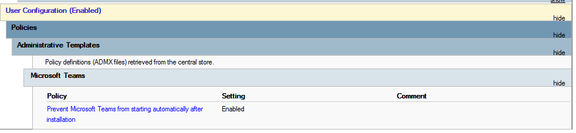
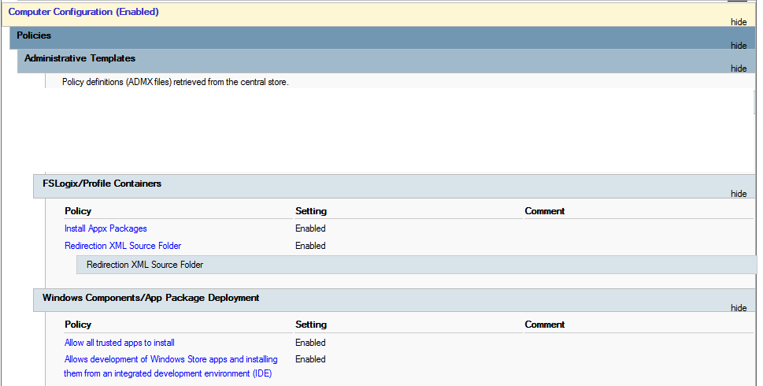

Teams with FSLogix setup guide
With the new Teams, Microsoft changed the package method for deploying it from teams 1.x, and this requires a new FSLogix hotfix, and method to get it working in your environment. The following is the outline of everything that I have done to make this work in a Server environment.
I recommend NOT using ODT and full profiles in FSLogix, instead just using full profiles with either VHDLocation or CloudCache.
I have a new dedicated page for the Teams installation script, accessible here. Teams Deployment Script
FSLogix Hotfix Version
The current FSLogix version is accessible from this permalink. https://aka.ms/fslogix/download
Make sure to read the release notes on this version so that you are using the supported Operating Systems. Also, when updating always update the ADMX and ADML files for control of the new features.
Group Policy
Under your user configuration, you will want to prevent Teams from auto-starting whenever you update the base image. However your maintenance machine should NOT have this feature on it, as it will prevent updates during update cycles.

Under the Computer Configuration you will need to enable the installation of Appx Packages, utilized a new Redirections.xml which we will cover later, and also enable trusted app installations.

And finally under Computer Configuration - Preferences - Registry, enable the websocket services for msedgewebview2.exe. And also disable the Auto Update of Teams if you are working with a non-persistent image where you control the installation of new Teams versions. This is no longer needed with VDA 2402, but I leave it in for legacy sakes. For the disable Auto-Updates you can move that to your updating and sealing script if your GPOs apply to maintenance and production machines. Or disable it outright as you see below.

FSLogix Redirections.xml
If you are using my previous example redirections.xml, you need to remove some folders for Teams to work. Not just under the Exclusion list, but also under the Common Folders compiled number at the top of the definition. Here is an example of an optimized redirections.xml I use that keeps profiles small, and still keeps Teams running. UPDATE! I have removed AppData\Local\assembly from the exclusion, as this was breaking some Office Add-ins for customers.
Compute the ExcludeCommonFolders number with the following selections.
-
1: Contacts folder
-
2: Desktop folder
-
4: Documents folder
-
8: Downloads folder
-
16: Links folder
-
32: Music folders
-
64: Pictures and Videos folders
-
128: Folders involved in Low Integrity Level processes like AppData\LocalLow
So in my example of 25, this will exclude Links, Download, and Contacts. If you wish to allow users to have Downloads stay persistent, be sure to enable StorageSense to clear out old data. For more info see my article on keeping profiles small.
<?xml version="1.0" encoding="UTF-8"?>
<FrxProfileFolderRedirection ExcludeCommonFolders="25">
<Excludes>
<Exclude Copy="0">Saved Games</Exclude>
<Exclude Copy="0">Tracing</Exclude>
<Exclude Copy="0">AppData\Local\ConnectedDevicesPlatform</Exclude>
<Exclude Copy="0">AppData\Local\Downloaded Installations</Exclude>
<Exclude Copy="0">AppData\Local\CEF</Exclude>
<Exclude Copy="0">AppData\Local\Comms</Exclude>
<Exclude Copy="0">AppData\Local\Deployment</Exclude>
<Exclude Copy="0">AppData\Local\FSLogix</Exclude>
<Exclude Copy="0">AppData\Local\Sun</Exclude>
<Exclude Copy="0">AppData\Local\Temp</Exclude>
<Exclude Copy="0">AppData\Local\VirtualStore</Exclude>
<Exclude Copy="0">AppData\Local\CrashDumps</Exclude>
<Exclude Copy="0">AppData\Local\Package Cache</Exclude>
<Exclude Copy="0">AppData\Local\Microsoft\Office\16.0\PowerQuery</Exclude>
<Exclude Copy="0">AppData\Local\Microsoft\TokenBroker\Cache</Exclude>
<Exclude Copy="0">AppData\Local\Microsoft\Notifications</Exclude>
<Exclude Copy="0">AppData\Local\Microsoft\Internet Explorer\DOMStore</Exclude>
<Exclude Copy="0">AppData\Local\Microsoft\Internet Explorer\Recovery</Exclude>
<Exclude Copy="0">AppData\Local\Microsoft\MSOIdentityCRL\Tracing</Exclude>
<Exclude Copy="0">AppData\Local\Microsoft\Messenger</Exclude>
<Exclude Copy="0">AppData\Local\Microsoft\Terminal Server Client</Exclude>
<Exclude Copy="0">AppData\Local\Microsoft\UEV</Exclude>
<Exclude Copy="0">AppData\Local\Microsoft\Windows\Application Shortcuts</Exclude>
<Exclude Copy="0">AppData\Local\Microsoft\Windows\Mail</Exclude>
<Exclude Copy="0">AppData\Local\Microsoft\Windows\WebCache</Exclude>
<Exclude Copy="0">AppData\Local\Microsoft\Windows\WebCache.old</Exclude>
<Exclude Copy="0">AppData\Local\Microsoft\Windows\AppCache</Exclude>
<Exclude Copy="0">AppData\Local\Microsoft\Windows\Explorer</Exclude>
<Exclude Copy="0">AppData\Local\Microsoft\Windows\DNTException</Exclude>
<Exclude Copy="0">AppData\Local\Microsoft\Windows\IECompatCache</Exclude>
<Exclude Copy="0">AppData\Local\Microsoft\Windows\iecompatuaCache</Exclude>
<Exclude Copy="0">AppData\Local\Microsoft\Windows\Notifications</Exclude>
<Exclude Copy="0">AppData\Local\Microsoft\Windows\PRICache</Exclude>
<Exclude Copy="0">AppData\Local\Microsoft\Windows\PrivacIE</Exclude>
<Exclude Copy="0">AppData\Local\Microsoft\Windows\RoamingTiles</Exclude>
<Exclude Copy="0">AppData\Local\Microsoft\Windows\SchCache</Exclude>
<Exclude Copy="0">AppData\Local\Microsoft\Windows\Temporary Internet Files</Exclude>
<Exclude Copy="0">AppData\Local\Microsoft\Windows\0030</Exclude>
<Exclude Copy="0">AppData\Local\Microsoft\Media Player</Exclude>
<Exclude Copy="0">AppData\Local\webex</Exclude>
<Exclude Copy="0">AppData\Local\Google\Chrome\</Exclude>
<Exclude Copy="0">AppData\Local\Microsoft\Edge\User Data\Default\Service Worker</Exclude>
<Exclude Copy="0">AppData\Local\Microsoft\Edge\User Data\Default\Cache</Exclude>
<Exclude Copy="0">AppData\Local\Microsoft\Edge\User Data\Default\Code Cache</Exclude>
<Exclude Copy="0">AppData\Local\Microsoft\Edge\User Data\Default\blob_storage</Exclude>
<Exclude Copy="0">AppData\Local\Google\Chrome\User Data\Default\Service Worker</Exclude>
<Exclude Copy="0">AppData\Local\Google\Chrome\User Data\Default\Cache</Exclude>
<Exclude Copy="0">AppData\Local\Google\Chrome\User Data\Default\Code Cache</Exclude>
<Exclude Copy="0">AppData\Roaming\com.adobe.formscentral.FormsCentralForAcrobat</Exclude>
<Exclude Copy="0">AppData\Roaming\Adobe\Acrobat\DC</Exclude>
<Exclude Copy="0">AppData\Roaming\Adobe\SLData</Exclude>
<Exclude Copy="0">AppData\Roaming\Microsoft\Document Building Blocks</Exclude>
<Exclude Copy="0">AppData\Roaming\Microsoft\Windows\Network Shortcuts</Exclude>
<Exclude Copy="0">AppData\Roaming\Microsoft\Windows\Printer Shortcuts</Exclude>
<Exclude Copy="0">AppData\Roaming\Sun\Java\Deployment\cache</Exclude>
<Exclude Copy="0">AppData\Roaming\Sun\Java\Deployment\log</Exclude>
<Exclude Copy="0">AppData\Roaming\Sun\Java\Deployment\tmp</Exclude>
<Exclude Copy="0">AppData\Roaming\Sun\Java\Deployment\tmp</Exclude>
<Exclude Copy="0">AppData\Roaming\ICAClient\Cache</Exclude>
<Exclude Copy="0">AppData\Roaming\Macromedia\Flash Player\macromedia.com\support\flashplayer\sys\</Exclude>
<Exclude Copy="0">AppData\Roaming\Macromedia\Flash Player\macromedia.com\support\flashplayer\flashplayer\#SharedObjects\</Exclude>
<Exclude Copy="2">AppData\Roaming\Zoom</Exclude>
<Exclude Copy="0">AppData\Local\Microsoft\Teams\Packages\SquirrelTemp</Exclude>
<Exclude Copy="0">AppData\Roaming\Microsoft\Teams\Service Worker\CacheStorage</Exclude>
<Exclude Copy="0">AppData\Roaming\Microsoft\Teams\Application Cache</Exclude>
<Exclude Copy="0">AppData\Roaming\Microsoft\Teams\Cache</Exclude>
<Exclude Copy="0">AppData\Roaming\Microsoft\Teams\Code Cache</Exclude>
<Exclude Copy="0">AppData\Roaming\Microsoft Teams\Logs</Exclude>
<Exclude Copy="0">AppData\Roaming\Microsoft\Teams\Media-Stack</Exclude>
<Exclude Copy="0">AppData\Local\Microsoft\OneNote\16.0\cache\tmp</Exclude>
<Exclude Copy="0">AppData\Local\CiscoSparkLauncher</Exclude>
<Exclude Copy="0">AppData\Local\OneLaunch</Exclude>
<Exclude Copy="0">AppData\Local\Packages\MSTeams_8wekyb3d8bbwe\LocalCache\Microsoft\MSTeams\Logs</Exclude>
<Exclude Copy="0">AppData\Local\Packages\MSTeams_8wekyb3d8bbwe\LocalCache\Microsoft\MSTeams\PerfLogs</Exclude>
<Exclude Copy="0">AppData\Local\Packages\MSTeams_8wekyb3d8bbwe\LocalCache\Microsoft\MSTeams\EBWebView\WV2Profile_tfw\WebStorage</Exclude>
</Excludes>
<Includes>
<Include>AppData\LocalLow\Sun\Java\Deployment\security</Include>
<Include>AppData\Local\Google\Chrome\User Data</Include>
</Includes>
</FrxProfileFolderRedirection>
Block Teams Auto-Launch with Published Applications
One big problem is that if you are using the same image for Desktops that you use for Published Applications, you will get Teams launching with your published app. The launch mechanism for these UWP apps doesn't use Run or Startup keys, instead they are read from HKEY_Current_User\Software\Classes\Local Settings\Software\Microsoft\Windows\CurrentVersion\AppModel\SystemAppData\. I believe Citrix is working on a mechanism to block these, but for now you can block Teams by modifying this entry.
HKEY_Current_User\Software\Classes\Local Settings\Software\Microsoft\Windows\CurrentVersion\AppModel\SystemAppData\MSTeams_8wekyb3d8bbwe\TeamsTfwStartupTask
Change State to 1 and Teams won't auto launch.
I use WEM in my environments to continually reset this variable, to prevent any future updates or user configurations from resetting it back to 2.
So someone pointed out that the Program Files\WindowsApps path is not accessible from regular users, so you don't want to use that path for launching Teams. Instead make a shortcut to %userprofile%\AppData\Local\Microsoft\WindowsApps\ms-teams.exe in their %userprofile%\AppData\Roaming\Microsoft\Windows\Start Menu\Programs\Startup